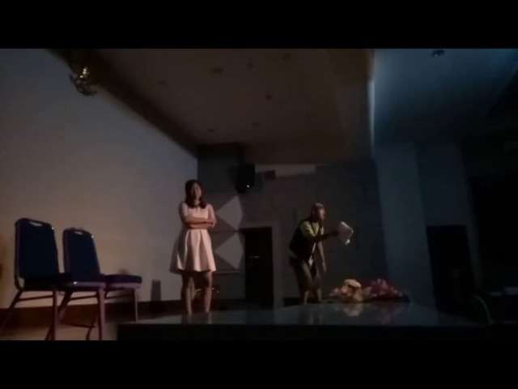
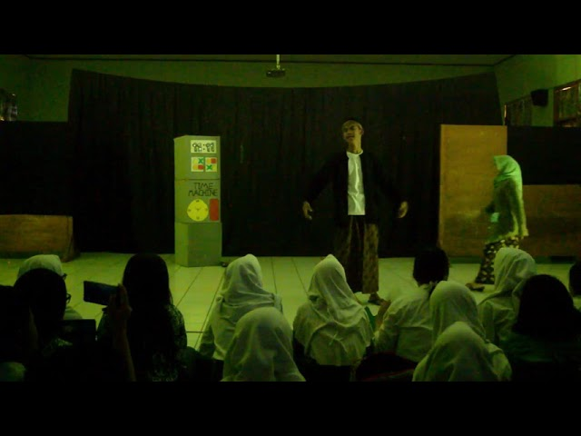
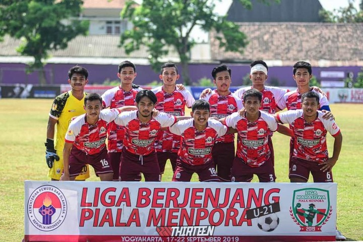
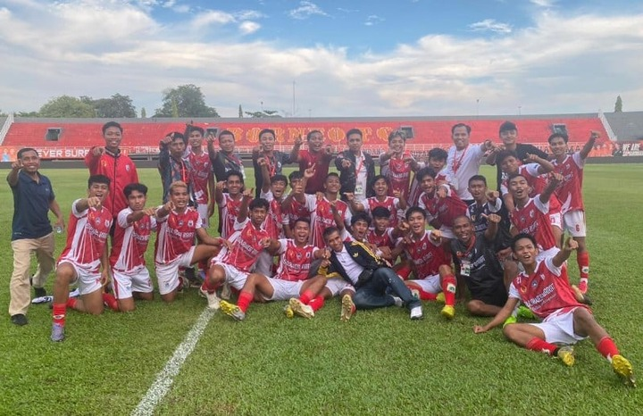
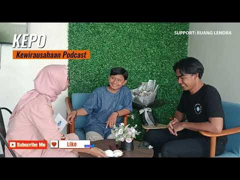
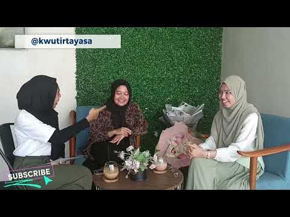
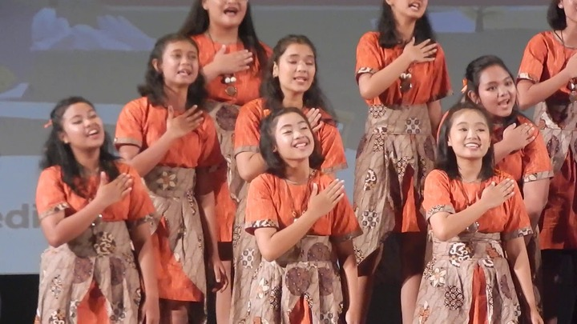
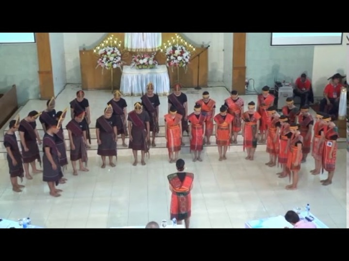

1. UKM Musik
Konser Musik
Konser Musik diadakan untuk merayakan ulang tahun UKM. Berikut video highlight konser tersebut:
Foto-foto dari konser musik :

Konser Musik diadakan untuk merayakan ulang tahun UKM. Berikut video highlight konser tersebut:
Foto-foto dari konser musik :
Pementasan drama "Bintang Kabayan Di Negeri Romeo" oleh UKM Teater. Berikut cuplikan dari pertunjukan tersebut:
Foto-foto dari pementasan drama:
 Turnamen sepak bola antar fakultas yang diadakan oleh UKM Olahraga. Berikut cuplikan pertandingan:
Foto-foto dari turnamen sepak bola:
 Kegiatan Kewirausahaan antar Mahasiswa yang mendorong tingkat ekonomi :
Foto-foto dari UKM Kemahasiswaan:
 Pementasan Seni Budaya "RASA SAYANGE" oleh UKM Seni Budaya. Berikut cuplikan dari pertunjukan tersebut:
Foto-foto dari Pentas Seni Budaya:
 